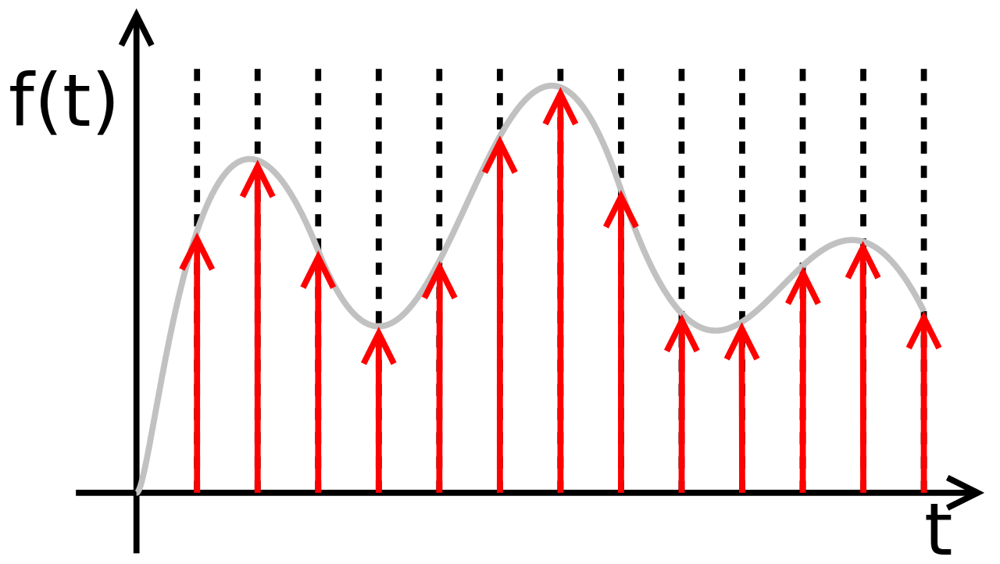

Introduction to Digital Signal Processing
Part 1
What is it?
DSP is the study field that deals with the Analysis, Transformation and Synthesis of digital signals.
What is a digital signal?
Signals are physical magnitudes through which information can be transmitted.
The fact that they are digital means that their variables are discrete.
Types of Signals
They can be classified according to their:
- Domain
- Nature
- Periodicity
- Parity
- Number of channels and/or variables
Signal Types - Domain
| Continuous Time | Discrete Time | |
| Continuous Amplitude | ||
| Discrete Amplitude | ||
Types of Signals - Nature
| Deterministic | Stochastics |
Types of Signals - Periodicity
| Periodic | Aperiodic |
| $$x_{(t+nT)} = x_{(t)}$$ | $$x_{(t+nT)} \neq x_{(t)}$$ |
Also quasi-preiodic signals exists, like speech.
Types of Signals - Parity
| Even | Odd |
| $$x_{(t)} = x_{(-t)}$$ | $$x_{(t)} = -x_{(-t)}$$ |
Types of Signals - Channels and Variables
| Multi-channel | Multi-dimensional |
Analysis
This can be done in 3 different domains:
- Time (or Space) Domain
- Spectral Domain
- Cepstral (Homomorphic) Domain
Time Analysis
Studies the variations of the signal as a function of time.
$x_{(t)} = A \cdot \cos (\omega t + \varphi)$
$\omega = 2 \pi f \quad \wedge \quad f = \frac{1}{T}$
Temporary Analysis
The following are the most common metrics:
| Amplitude | Period | Phase | Energy | Power | RMS |
|---|---|---|---|---|---|
| $$x_{[n]}$$ | $$T = \frac{1}{f}$$ | $$\varphi$$ | $$\sum \limits_{\lt N \gt}{\left|x_{[n]}\right|}^2$$ | $$\frac{1}{N}\sum_{\lt N \gt} {\left|x_{[n]}\right|}^2$$ | $$\sqrt{\frac{1}{N}\sum_{\lt N \gt} {x_{[n]}}^2}$$ |
Temporary Analysis
In the case of stochastic signals a probabilistic analysis it's commonly done.
| Expected Value | Variance | Autocorrelation |
|---|---|---|
| $$E\left[ x_{[n]} \right]$$ | $$Var \left[ x_{[n]}\right]$$ | $$S_{xx} = E\left[ x_{[n]} x_{[n]} \right]$$ |
Spectral Analysis
Time Domain is the most intuitive, but sometimes is the one with less information.
Spectral Analysis - Fourier
It's a transformation used to pass between the temporal domain (or spatial) and the frequency domain.
It seeks to approximate an arbitrary function $f_{(t)}$ by another scaled function $C x_{(t)}$ minimizing the MSE.
Spectral Analysis - Fourier
A set of functions that fulfill this requirement is the complex exponential function.
$e^{-jn\omega_0t} = \cos\left(n\omega_0 t\right) + j \sin\left(n\omega_0 t\right)$
| The Fourier Transform can be understood as a projection of the function over infinite sinusoids of different frequencies. |
Spectral Analysis - Fourier
| Transform | Inverse Transform | ||
|---|---|---|---|
| Continuous Signals | Periodic | $$C_{n} = \frac{1}{T_0}\int\limits_{T_0} f_{(t)} e^{-jn\omega_0t} dt$$ | $$f_{(t)} = \sum\limits_{n=-\infty}^\infty C_{n} e^{jn\omega_0t}$$ |
| Aperiod | $$F_{(\omega)} = \int\limits_{t=-\infty}^{\infty} f_{(t)} e^{-j\omega t} dt$$ | $$f_{(t)} = \frac{1}{2\pi}\int\limits_{\omega=-\infty}^\infty F_{(\omega)} e^{j\omega t} d\omega$$ | |
| Discrete Signals | Periodic | $$C_k = \frac{1}{N_0}\sum\limits_{n=0}^{N_0} x_{[n]} e^{-jk\Omega_0 n}$$ | $$x_{[n]} = \sum\limits_{k=0}^{N_0} C_k e^{jk\Omega_0 n} dt$$ |
| Aperiod | $$X_{(\Omega)} = \sum\limits_{n=-\infty}^\infty x_{[n]} e^{-j\Omega n} dt$$ | $$x_{[n]} = \frac{1}{2\pi} \int\limits_{2\pi} X_{(\Omega)} e^{j\Omega n} d\Omega$$ | |
Spectral Analysis - Fourier
Representation
The FT gives us a complex function that can be represented as:
| Cartesian | Polar |
| $ X_{(\omega)} = \mathbb{R}e \{X_{(\omega)}\} + j \mathbb{I}m \{X_{(\omega)}\} $ | $ X_{(\omega)} = \|X_{(\omega)}\| \angle X_{(\omega)} $ |
The polar representation is the most used, but is usually expressed in decibels:
$$\|X_{(\omega)}\|_{dB} = 20\cdot\log_{10}\left( \|X_{(\omega)}\|\right)$$
Spectral Analysis - Fourier
Properties
Looking at the equations in detail, we can deduce some important properties:
- Si $f_{(t)} \in \mathbb{R}e \Longrightarrow \|X_{(\omega)}\|$ es even y $ \angle X_{(\omega)}$ es odd
- Si $f_{(t)}$ es even $ \Longrightarrow \mathbb{I}m \{X_{(\omega)}\}=0$
- Si $f_{(t)}$ es odd $ \Longrightarrow \mathbb{R}e \{X_{(\omega)}\}=0$
Spectral Analysis - Fourier
Properties
| Linearity | $\alpha f(t)+\beta g(t)$ | $\alpha F(\omega )+\beta G(\omega)$ |
|---|---|---|
| Duality or Symmetry | $F(t)$ | $2\pi f(-\omega )$ |
| Scale | $f(at)$ | $\frac {1}{\left|a\right|}F\left({\frac {\omega }{a}}\right)$ |
| Investment in time | $f^{}(-t)$ | $F^{}(-\omega )$ |
| Translation in time | $f(t-t_{0})$ | $F(\omega )e^{-j\omega t_{0}}$ |
| Frequency translation | $f(t)e^{j\omega _{0}t}$ | $F(\omega -\omega _{0})$ |
| Derivation in time | $\frac {\partial ^{n}f(t)}{\partial t^{n}}$ | $\left(j\omega \right)^{n}F(\omega )$ |
| Derivation in frequency | $\left(-jt\right)^{n}f(t)$ | $\frac {\partial ^{n}F(\omega )}{\partial \omega ^{n}}$ |
| Integration | $\int \limits _{-\infty }^{t}{f(\tau )\partial \tau }$ | $\frac {F(\omega )}{j\omega }+\pi F(0)\delta (\omega )$ |
| Convolution | $f(t)*g(t)$ | $F(\omega )G(\omega )$ |
| Modulation | $f(t)g(t)$ | $F(\omega )*G(\omega )$ |
Spectral Analysis - Fourier
Energy
To be able to represent a function in Fourier series, the following condition must be fulfilled:
$$\int \limits_{T_0} |f(t)|^2 dt \lt \infty$$
If this condition is met, we can calculate the energy of the same in the spectrum by means of the Parseval Identity
$$\int \limits _{-\infty }^{\infty }{\left|f(t)\right|^{2}\partial t={\frac {1}{2\pi }}}\int \limits _{-\infty }^{\infty }{\left|F(\omega )\right|^{2}\partial \omega }$$
Spectral Analysis - Fourier
Algorithm
Cooley-Tukey developed in 1965 an algorithm that reduces the computational complexity of the DFT and the IDFT, from $ O (N ^ 2) $ to $ O (N \ log (N)) $ .
However, the number of samples to use must be a power of 2 .
Also, using the property of real signals
$X_{[k]}^*=X_{[-k]}$
can be accelerated further (Sorensen, 1987).
Typical signals
There are signals that due to their characteristics, are widely used in the area:
- Cosine/Sine
- Square
- Delta
- Escalon
Typical signals - Cosine
$$f_{(t)} = A \cos (\omega_0 t) \qquad C_n = C_{-n} = \frac{A}{2}$$

Typical signals - Pulse
$$\prod {\left({\frac {t}{T}}\right)}=\left\{{\begin{aligned}&1,\left|t\right|\leq {}^{T}\!\!\diagup \!\!{}_{2}\;\\&0,\left|t\right|>{}^{T}\!\!\diagup \!\!{}_{2}\;\\\end{aligned}}\right. \qquad F_{(\omega)}=\frac {2\sin \left(\frac{\omega^T}{2}\right)}{\omega} = T \text{sinc} \left( T \frac {\omega }{2\pi }\right) $$
Typical signals - Delta
$$f_{(t)} = \delta_{(t)} \quad F_{(\omega)}=1$$
Typical signals - Escalon
$$u(t)=\left\{{\begin{aligned}&1,t>0\\&0,t <0\\\end{aligned}}\right. \Longrightarrow \mathbb {F} [u(t)]={\frac {1}{j\omega }}+\underbrace {\pi \delta (\omega )} _{\text{usually omitted}}$$
Typical signals - Other
LTI Systems
A system is a process that transforms an input signal $x_{(t)}$ (o $x_{[n]}$) to an output $y_{(t)}$ (o $y_{[n]}$).
$y_{(t)} = T\left[ x_{(t)} \right] \qquad y_{[n]} = T\left[ x_{[n]} \right]$
LTI Systems - Definition
The study of DSP focuses on Linear and Invariant Systems in Time (LTI).
This is reduced by the following properties:
- Overlay $T\left[ x_{1[n]} \cdot \alpha + x_{2[n]} \cdot \beta \right] = y_{1[n]} \cdot \alpha + y_{2[n]} \cdot \beta$
- Invariability $T\left[ x_{[n-n_0]} \right] = y_{[n-n_0]}$
- Causality $T\left[ \delta_{[n]} \right] = 0 \quad \forall n \lt 0$
- Stability $\|T\left[ \delta_{[n]} \right]\| \lt \infty$
LTI Systems - Impulse Response
A signal can be broken into a series of deltas:
$$x_{[n]} = \sum_{k=-\infty}^\infty x_{[k]} \delta_{[n-k]} \qquad x_{(t)} = \int \limits_{T=-\infty}^\infty x_{(\tau)} \delta_{(t-\tau)} d\tau$$
Then:
$$ y_{[n]} = T\left[\sum_{k=-\infty}^\infty x_{[k]} \delta_{[n-k]}\right] \quad \Longrightarrow \quad y_{[n]} = \sum_{k=-\infty}^\infty x_{[k]} T\left[\delta_{[n-k]}\right] $$
$$ h_{[n-k]} = T\left[ \delta_{[n-k]} \right] \quad \Longrightarrow \quad y_{[n]} = \sum_{k=-\infty}^\infty x_{[k]} h_{[n-k]} $$
LTI Systems - Impulse Response
Therefore, any LTI System can be defined by its impulse response. And the output of that system will be given by the convolution of the input by its response to the impulse:
$$ y_{[n]}=x_{[n]}*h_{[n]}=\sum_{k=-\infty}^\infty x_{[k]} h_{[nk]} $$
Finally, remembering the convolution property of the Fourier Transform:
$$ y_{[n]}=x_{[n]} * h_{[n]} \Longrightarrow Y_{[k]}=X_{[k]} H_{[k]} $$
Sampling
To digitize a signal, we must discretize both the time variable and its amplitude.
This task is performed by Analog to Digital Converters (ADC).
Sampling
| Sample | Sample & Hold |
|---|---|
|  |
Equivalent to multiply the same by displaced deltas
$ x[n]=x_{(t)} \cdot \delta_{(t-nT)} \quad \Longrightarrow \quad X[k]=X(\omega) * \delta_{(k\omega_0)}$
Sampling
The sampling theory of Nyquist-Shannon states that the sampling frequency must be at least double that the maximum frequency of the signal, so as not to lose information.
$ f_{s} \ge 2 f_{max} $
Sampling
Sampling - Aliasing
The phenomenon that occurs when there is under sampling is called Aliasing , derived from Alias.
Sampling - Aliasing
For images this is known as the Moire effect.

Transformed
| Continuous signals | Discrete Signals | |
|---|---|---|
| Finite Energy | Fourier Continuous Transform | Discrete Fourier Transform |
| Infinite energy | Laplace Transform | Z Transform |
Laplace Transform
It is an extension of the Fourier transform, since it only adds a term
$$F_{(\omega)} = \int\limits_{t=-\infty}^{\infty} f_{(t)} e^{-st} dt \qquad s = \sigma+j\omega$$
Z Transform
$$X_{(z)} = \sum_{n=-\infty}^\infty x_{[n]}z^{-n} \qquad z=\rho e^{j\Omega}$$